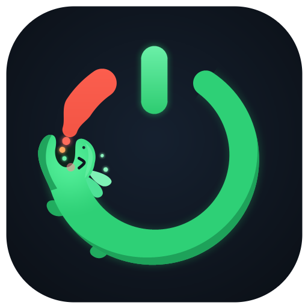
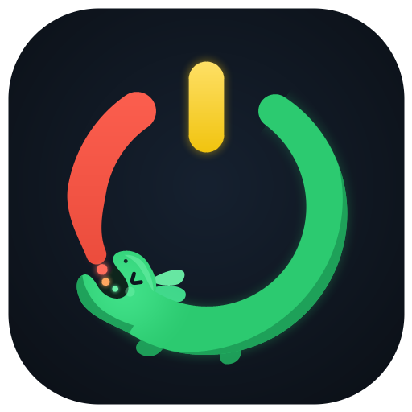
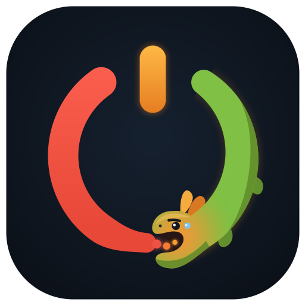
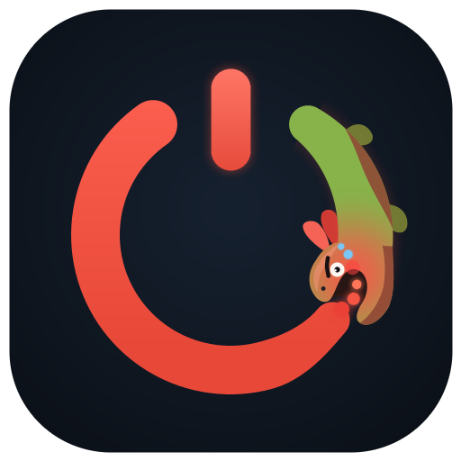

상단 '1'자 길이 축소 및 하향 배치 · 전체 링 & 도룡뇽 크기 약 18% 확대 · 단계별 얼굴색·아가미색·표정(행복 → 평온 → 식은땀 → 위기감) 적용

도룡뇽이 9~10시 방향까지 통통하게 자라나 밝은 민트빛 얼굴과 반달 웃음눈(⌒), 분홍 볼터치, 회복 스파클로 편안하고 행복한 상태를 표현합니다.
salamander_tier1_green.png
기본 상태(75P)로, 눈을 평온하게 감은(︶) 에메랄드빛 도룡뇽이 7~8시 방향에서 빨간 게이지를 차분하게 흡수하며 자라나는 모습입니다.
salamander_tier2_yellow.png
사용 시간이 길어져 5~6시 방향으로 밀려나며 얼굴과 아가미가 주황빛으로 달아오르고, 팔자 눈썹과 식은땀(💧)을 흘리며 버거워하는 표정입니다.
salamander_tier3_orange.png
빨간 피로도가 링 대부분을 덮쳐 3~4시 방향에 몰린 상태로, 얼굴과 아가미가 붉게 달아오르고 동공이 작아진 다급한 눈(⊙)과 땀방울로 위기감을 생생하게 전달합니다.
salamander_tier4_red.png